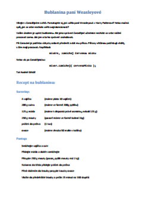
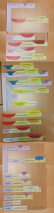

Úkol 01 - Bublanina
Domácí úkol
Za domácí úkol je přepsat složenou Bublaninu do Javy
do projektu Java-Training/Projects/Lekce01/20-Bublanina-Zadani-v2.11 (v editoru IntelliJ IDEA)
z fotky z hodiny, kterou jste si podle doporučení měly udělat.
Bublaninu lze řesit více způsoby, není tedy jediné správné řešení.
Program nicméně pozná,
že je vyřešen správně (a vypíše to).
Pokud jste nestihly skládačku složit v hodině,
zde je popis Bublaniny.

S ním ji lze doprogramovat přímo v Javě v IntelliJ IDEA.
Druhá, lehčí verze, je přepsat ji z následující fotky.
Snažte se to ale nedělat, dokud si vážně nebudete vědět rady.

{kind=link}
Odevzdání domácího úkolu
Domácí úkol (složku s projektem 20-Bublanina-Zadani-v2.11)
zabalte pomocí 7-Zipu pod jménem Ukol01-Vase_Jmeno.7z.
(Případně lze použít prostý zip, například na Macu).
Takto vytvořený archív nahrajte na Google Drive do složky Ukol01.
Pokud byste chtěly odevzdat revizi úkolu (např. po opravě),
zabalte ji a nahrajte ji na stejný Google Drive znovu,
jen tentokrát se jménem Ukol01-Vase_Jmeno-verze2.7z